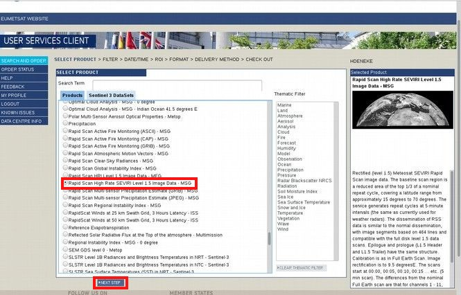
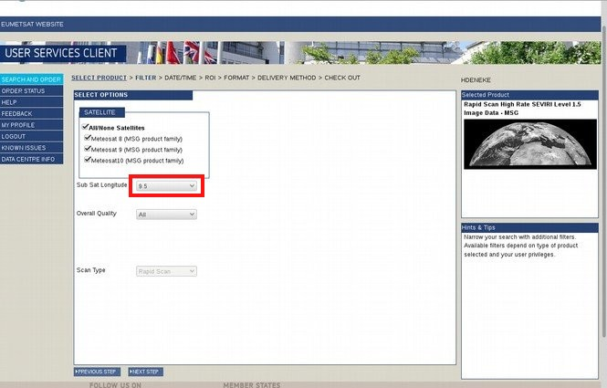
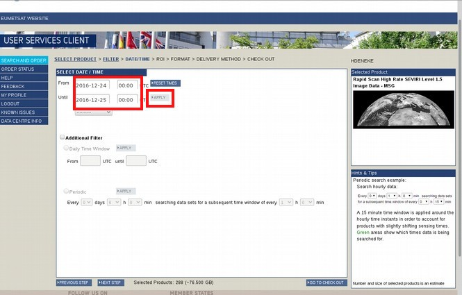
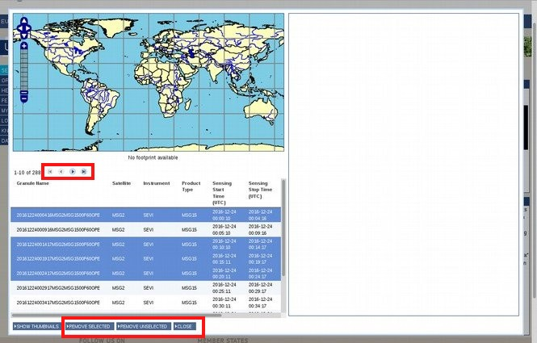
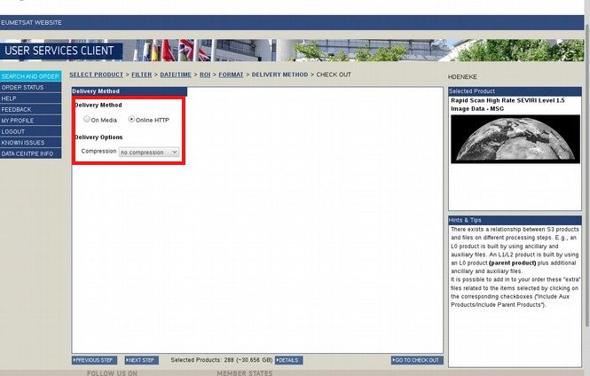
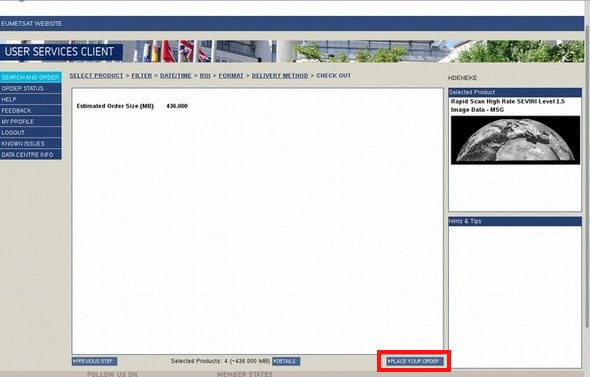
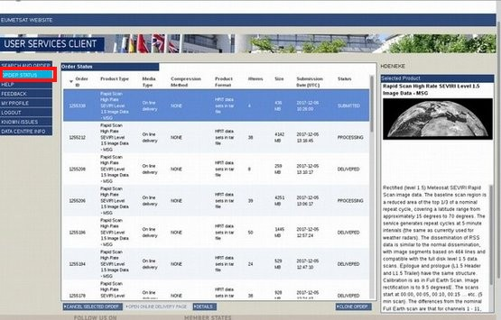

Ordeting Data¶
Ordering data from the EUMETSAT archive¶
{kind=link}
{kind=link}
3. Select your data type from the data center product list, then go on with next step:¶
{kind=link}
For Prime-Service (PZS) use: “High Rate SEVIRI Level 1.5 Image Data – MSG – 0 degree”
For Rapid-Scan-Service (RSS) use: “Rapid Scan High Rate SEVIRI Level 1.5 Image Data – MSG”
For Prime-Service over Indian Ocean use: “High Rate SEVIRI Level 1.5 Image Data – MSG – Indian Ocean 41.5 degrees E”
4. Double-check if the required longitude in Sub Sat Longitude is correct:¶
{kind=link}
0° for the Prime-Service (PZS)
9.5° for the Rapid-Scan-Service (RSS)
41.5° for the Indian Ocean
5. Select the required period of time in the Select Date / Time field. Get results with Apply (might take a while).¶
{kind=link}
a maximum of three months for Prime-Service (PZS)
a maximum of one month for Rapid-Scan-Service (RSS)
{kind=link}
{kind=link}
8. Go to Details, which on the right to next step.¶
{kind=link}
Use triangleright and ► to browse through the selected period of time and use CTRL + Left Click to select the slots you want. If you are done with the selection use Remove Unselected to clear all unwanted slots from your list. Double-check if no slot is missing. Use “Close” if everything is correct.
9. Choose the Delivery method which is suitable for the data:¶
{kind=link}
→ “Online HTTP” if the order is bigger than 80 GB
→ “On Media” if the order is less than 80 GB
By delivery option no compression is fine because the data files are already compressed.
10. Go the last step, where only the overall data size is presented.¶
{kind=link}
Finally send the order with “Place your order”.
11. Note the order number at our wiki:¶
http://wiki-intern.tropos.de/index.php/EUMETSAT_Data_Ordering_Diary
{kind=link}
12. Click at ORDER STATUS. It shows the order number and the status of the order. Several status are possible:¶
Pending (order still not submitted),
Submitted (order is submitted),
Cancelled (order is cancelled),
Processing (order is en route),
Delivered (order is delivered),
Error (order went wrong)